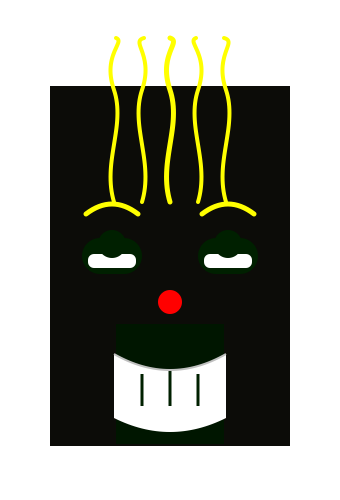
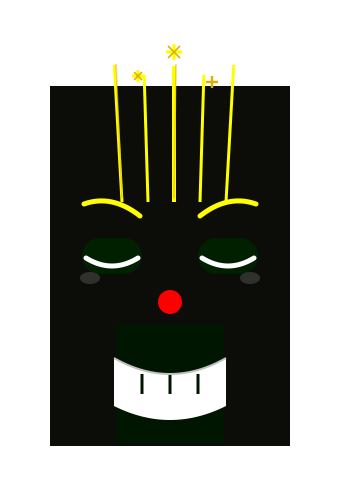
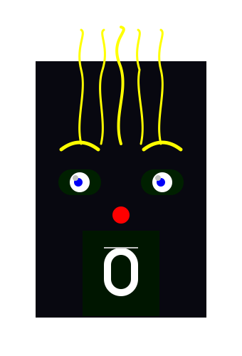
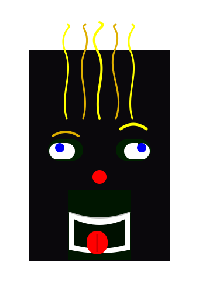
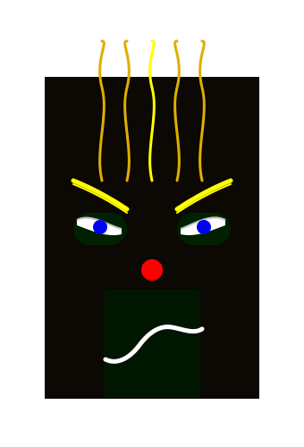
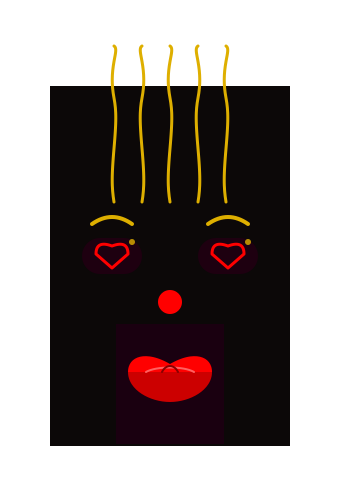
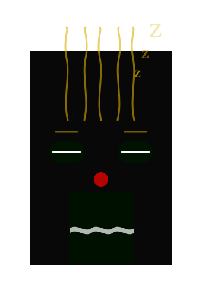
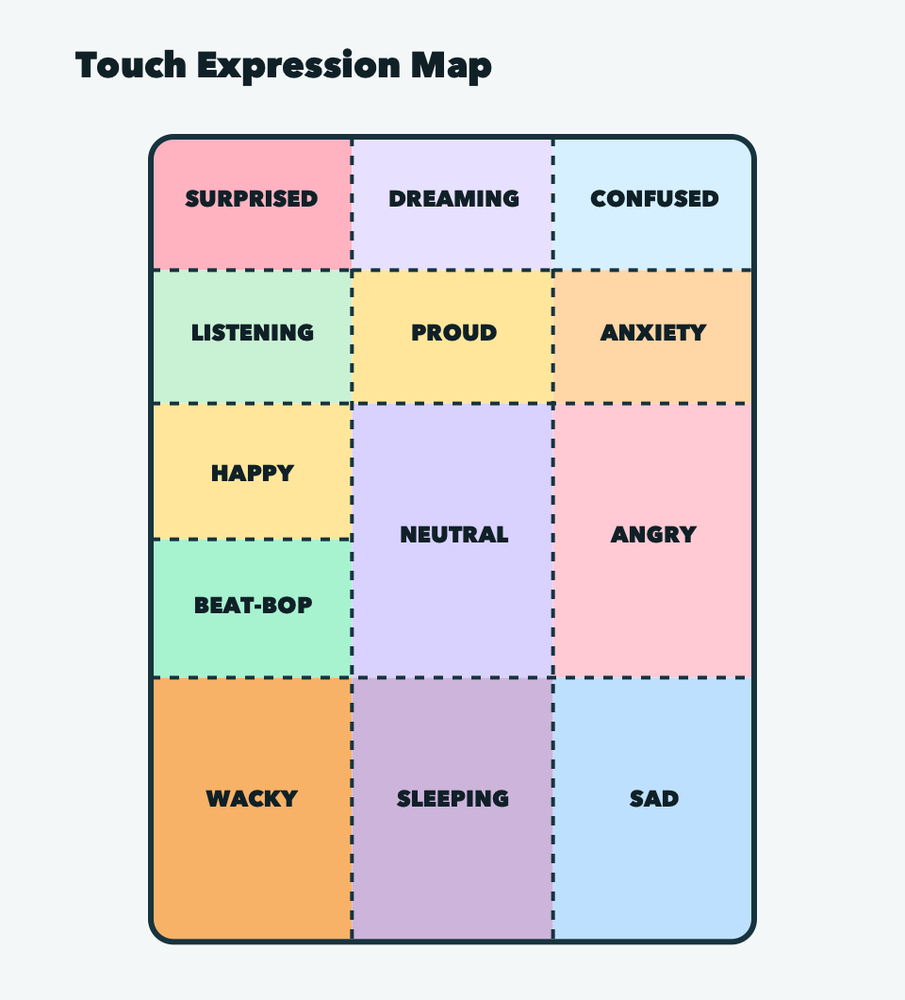

Touch
Tap one of 13 screen regions and that face appears at once, then holds briefly after you let go. Hold about 2.5 seconds to toggle labels, 5 for the QR screen, 10 for the battery.
Another Fine Piece of Useless Digital Art
A touchy, sound-reactive, occasionally dramatic little screen creature. The handheld Vidiotbox includes the features of the web-based virtual Vidiotbox, plus moods that develop from user interactions, sound reactions, and dynamic lighting that changes with its expressions.
Thirteen are a tap away. LOVING and SCARY only appear in moods.

HAPPY
PROUD
SURPRISED DREAMING
DREAMING
WACKY
ANGRY
LOVING
SLEEPINGTap one of 13 screen regions and that face appears at once, then holds briefly after you let go. Hold about 2.5 seconds to toggle labels, 5 for the QR screen, 10 for the battery.
A mood is a short sequence of expressions: Calm, Curious, Playful, Whackbop, Annoyed, Sleepy, Dreamy or Torn. Poke patterns queue them, and touch interrupts them.
While idle, it listens. Soft sounds make it curious and very loud ones can annoy it. The setup portal has a VU meter for tuning the thresholds.
Energy, patience and sociability reflect recent behavior, then fade back toward neutral. Low patience makes it easier to annoy; high sociability makes it quicker to get curious.
Remove the magnetic cap to turn it on; put it back to disconnect the battery. To charge, take the cap off and plug USB into the bottom. It sleeps before the LiPo runs too low.
At startup it opens a temporary Wi-Fi network, vidiotbox-XXXX. Join it and open 192.168.4.1 to adjust sound, audio, personality, idle expressions and GIFs.

Install firmware from Chrome or Edge on a desktop computer, over a USB cable. V101-RF2 Basel is the current version; earlier ones stay available.
The installer writes the board's flash only. Faceimator images, GIFs, sounds and settings live on the microSD card.
Waking the face, the touch map, hidden holds, poke patterns, moods, idle and sound behavior, the setup portal, battery and personality.